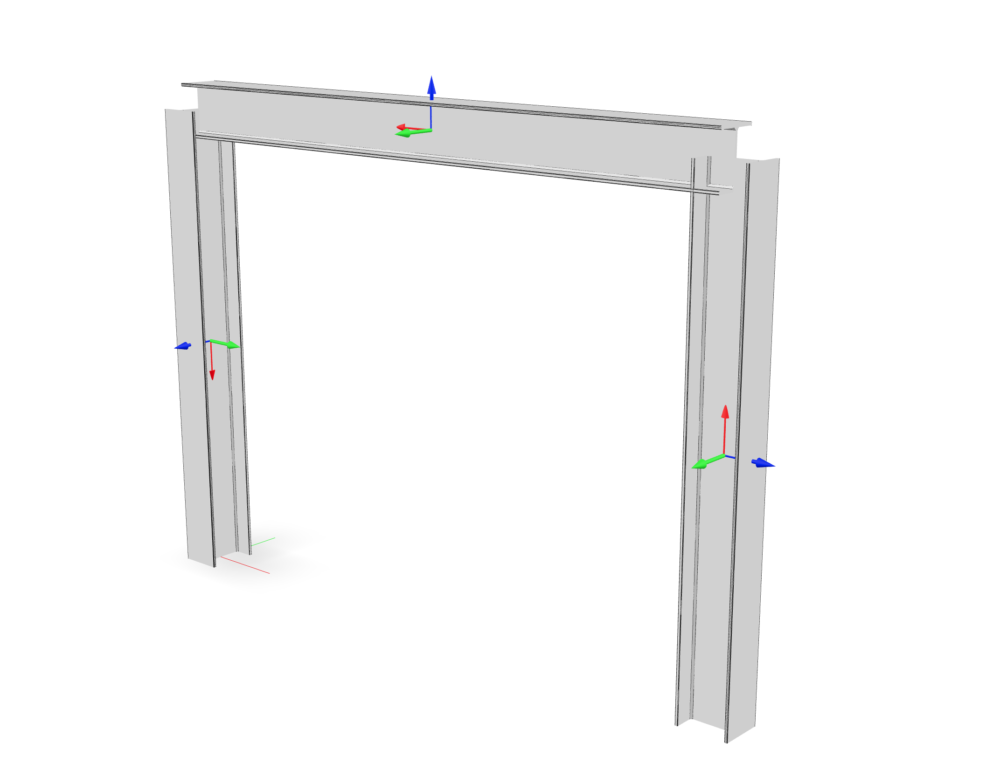
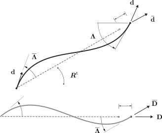

3.1.8.3. Corotational02
The corotational coordinate transformation allows small-strain frame elements to be employed in a large deformation analysis. [1] [2] Corotational02 superceeds the original Corotational transformation, which is now deprecated.
- geomTransf Corotational02 $tag < $vecxzX $vecxzY $vecxzZ > <-jntOffset $dXi $dYi $dZi $dXj $dYj $dZj>
Argument |
Type |
Description |
|---|---|---|
$tag |
integer |
integer tag identifying transformation |
$vecxzX $vecxzY $vecxzZ |
float |
X, Y, and Z components of vecxz, the vector used to define the local x-z plane of the local-coordinate system. The local y-axis is defined by taking the cross product of the vecxz vector and the x-axis. These components are specified in the global-coordinate system X,Y,Z and define a vector that is in a plane parallel to the x-z plane of the local-coordinate system. These items need to be specified for the three-dimensional problem. |
$dXi $dYi $dZi |
float |
joint offset values – offsets specified with respect to the global coordinate system for element-end node i (optional, the number of arguments depends on the dimensions of the current model). |
$dXj $dYj $dZj |
float |
joint offset values – offsets specified with respect to the global coordinate system for element-end node j (optional, the number of arguments depends on the dimensions of the current model). |
- Model.geomTransf("Corotational02", tag, vecxz[, offi, offj])
Define a corotational geometric transformation for frame elements.
- Parameters:
tag (integer) – integer tag identifying transformation
vecxz (tuple of floats) – X, Y, and Z components of vecxz, the vector used to define the local x-z plane of the local-coordinate system, required in 3D. The local y-axis is defined by taking the cross product of the vecxz vector and the x-axis.
offi (tuple of floats) – joint offset values – offsets specified with respect to the global coordinate system for element-end node i (optional, the number of arguments depends on the dimensions of the current model).
offj (tuple of floats) – joint offset values – offsets specified with respect to the global coordinate system for element-end node j (optional, the number of arguments depends on the dimensions of the current model).
Note
The element coordinate system and joint offsets are the same as that documented for the Linear transformation.
3.1.8.3.1. Examples
This example is developed in detail on the examples site. In order to cover a wide range of cases, the strong axis of the first column, element 1, is oriented so as to resist bending outside the plane of the portal, but the strong axis of the second column, element 3, will resist bending inside the portal plane.
{kind=link}

Fig. 3.1.8.6 A portal frame with \(X_3\) vertical (rendered with veux).
node 1 0 0 0
node 2 $width 0 0
node 3 $width 0 $height
node 4 0 0 $height
geomTransf Corotational02 1 1 0 0; # Column
geomTransf Corotational02 2 0 0 1; # Girder
geomTransf Corotational02 3 0 -1 0; # Column
import xara
model = xara.Model(ndm=2, ndf=3)
model.node(1, ( 0, 0, 0))
model.node(2, (width, 0, 0))
model.node(3, (width, 0, height))
model.node(4, ( 0, 0, height))
model.geomTransf("Corotational02", 1, (1, 0, 0)) # Column
model.geomTransf("Corotational02", 2, (0, 0, 1)) # Girder
model.geomTransf("Corotational02", 3, (0,-1, 0)) # Column
3.1.8.3.2. Theory

Fig. 3.1.8.7 Corotational transformation of a two-node frame element.
Under a corotational transformation, an element’s state determination is performed in a transformed configuration space represented by director fields \(\left\{\bar{\mathbf{d}}_k\right\}\), and \(\left\{\bar{\mathbf{D}}_k\right\}\) with the expressions: